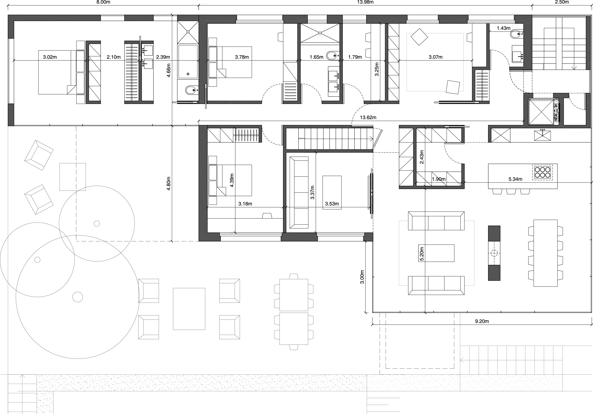
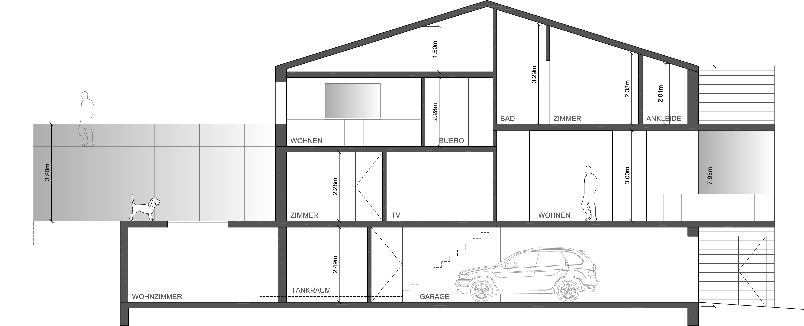

P 002
Renovation Concept for Two-Family Residence
The challange was to come up with a concept for the renovation of a two-family residence that was built by father and son in 1972. The main building’s ceiling heights were below 8 feet which lead to the introduction of two new cubes projecting out of the existing foot print and introducing a new interior height of 10 feet. Each cube partaining to one of the families with south-east respectively south-west exposure. A new stair and elevator brought the house up to a fully accessible building topped with a minimalistic interior contrasting the surrounding vineyards.


